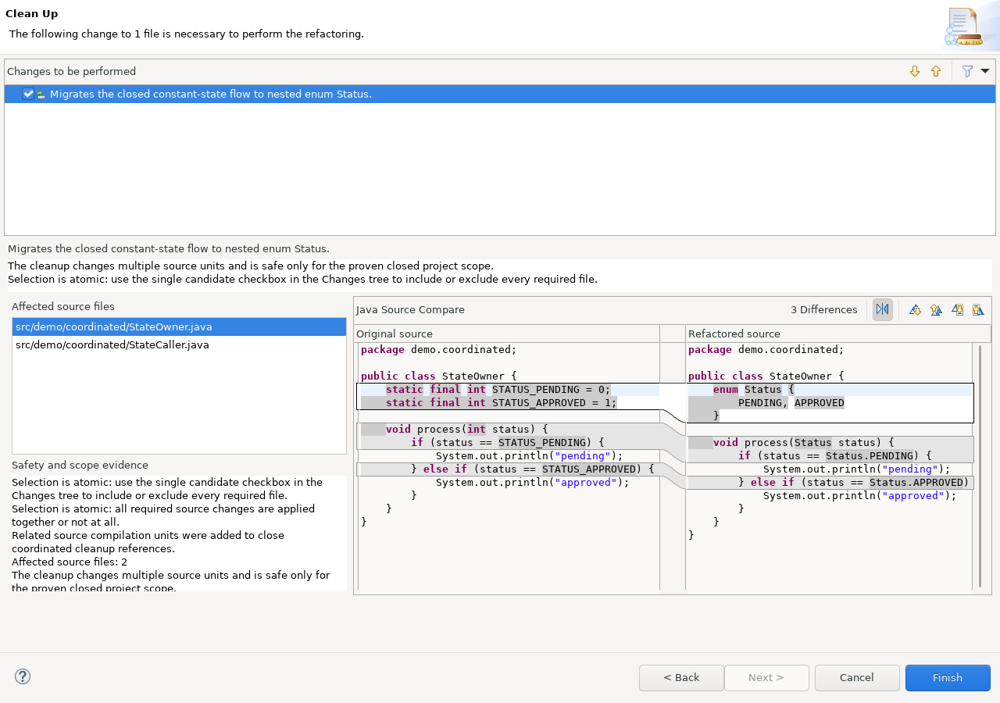

Open Java > Code Style > Clean Up, edit a cleanup profile, and select Int to Enum (Sandbox).
The cleanup requires a coherent constant domain and enough resolved usage information to avoid mixing unrelated integers.
With the pinned optional patched JDT UI host, every coordinated Int-to-Enum migration is shown as one candidate-level checkbox leaf. Selecting the candidate shows all required Java files and the Selection is atomic explanation. Required file changes and nested edit groups are informative; they cannot be enabled or disabled independently.

The screenshot and candidate-level contract require the pinned optional patched JDT UI product. Stock or otherwise unpatched Eclipse installations can still load the Sandbox cleanup, but they do not provide this host-side atomic-selection guarantee. Do not treat a stock preview as proof that a project-wide candidate cannot be partially selected.
For the distinction between configuration preview, execution preview, independent local deselection, and coordinated atomic migrations, see Cleanup preview model.
The configuration image is generated from a real Eclipse workbench by
SandboxHelpScreenshotsSWTBotTest. The atomic candidate image is generated by
SandboxAtomicPreviewPatchedJdtSWTBotTest in the separate patched-product workflow.
Regenerate the applicable image after UI changes rather than editing either PNG manually.